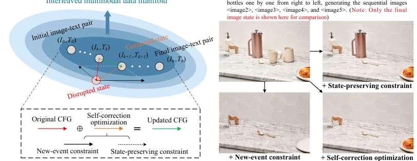
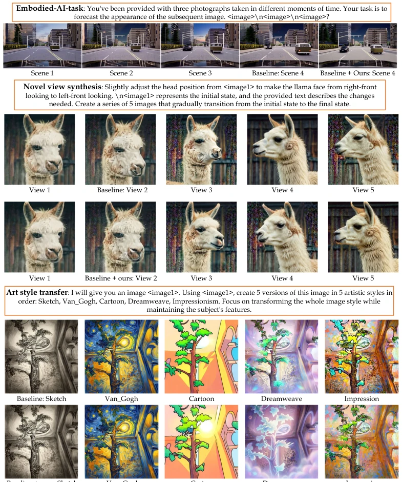
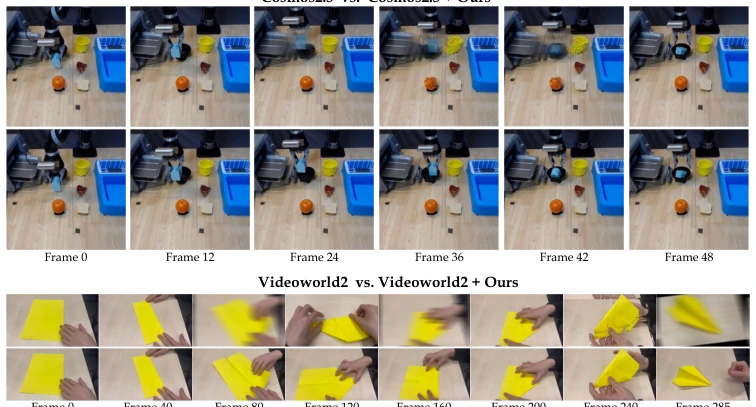
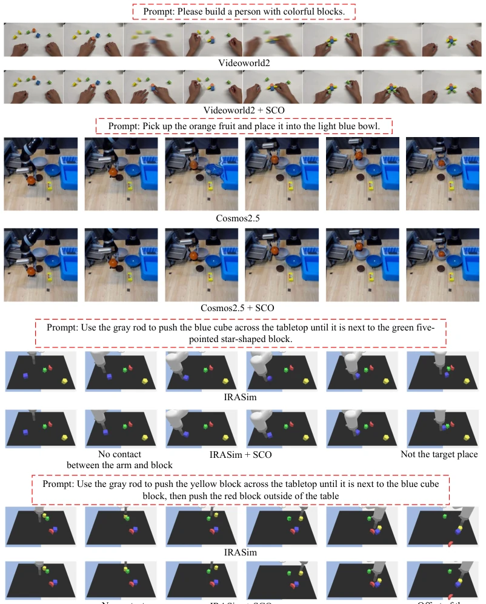
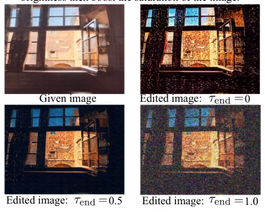
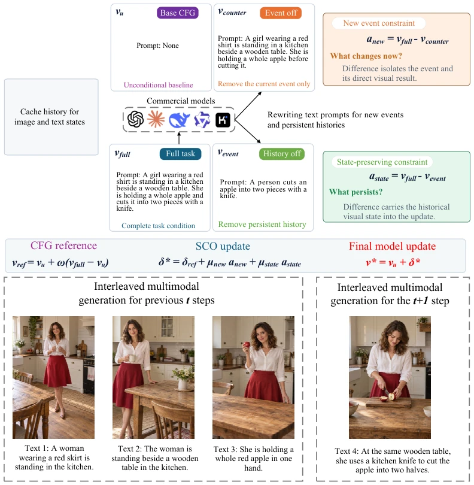
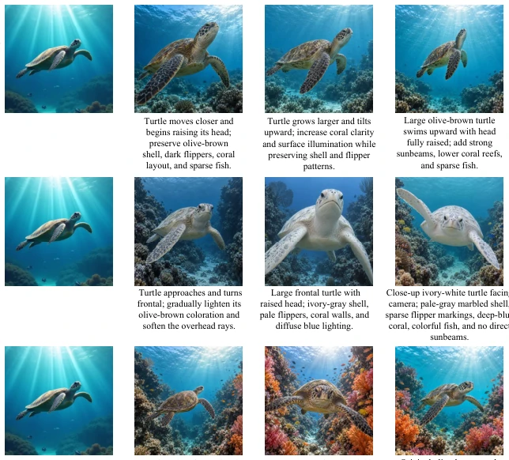
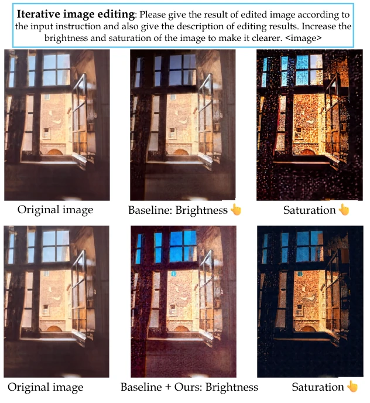

This paper prescribes a "self-correction" remedy for multimodal generation models, attempting to solve the persistent issues of "poor memory" and "rapid face-changing" without retraining. The authors developed SCO (Self-Correction Optimization), which essentially implements "dual constraints" during inference: one must heed new instructions (new event constraints) while rigidly maintaining old settings (state preservation constraints). This strategy is theoretically appealing, as it enhances consistency without fine-tuning, truly a boon for the lazy. However, upon closer inspection, this method has extremely high requirements for the base model; if the underlying conditional branches (counterfactual/event-only) are themselves unclear, SCO becomes "a clever woman cannot cook without rice", and may even encounter the awkwardness of metrics conflicting with each other like MiniGPT-5. Furthermore, this method of repeatedly performing projection optimization during the sampling process likely incurs non-negligible inference latency, which is a "sweet burden" requiring trade-offs for embodied intelligence with high real-time requirements.
研究动机Motivation
多模态大模型（MLLMs）在视觉理解和生成上进步神速，但在生成交错图像-文本内容时，往往面临“顾此失彼”的困境。现有的系统要么依赖昂贵的额外训练数据（Tian et al., 2024; Ye et al., 2026），要么依赖复杂的架构设计来维持跨模态和时序一致性。这些方法计算成本高，且无法显式纠正当前指令与历史视觉状态冲突时的生成更新。具体而言，模型常出现两个问题：一是未能充分表达新事件（under-realization），二是为了迎合新指令而引入主体漂移（subject drift）或场景重构（Diao et al., 2026b; Chen et al., 2025a）。这种误差在连续生成步骤中会累积，导致长程任务（如多步图像编辑、具身操作）失败。因此，亟需一种无需额外训练、能显式平衡“新事件实现”与“历史状态保持”的测试时优化方法。
Multimodal Large Language Models (MLLMs) have progressed rapidly in visual understanding and generation, but often face the dilemma of "focusing on one side and neglecting the other" when generating interleaved image-text content. Existing systems either rely on expensive additional training data (Tian et al., 2024; Ye et al., 2026), or rely on complex architectural designs to maintain cross-modal and temporal consistency. These methods have high computational costs and cannot explicitly correct generation updates when current instructions conflict with historical visual states. Specifically, models often exhibit two problems: first, failure to fully express new events (under-realization), and second, introducing subject drift (subject drift) or scene reconstruction (Diao et al., 2026b; Chen et al., 2025a) to accommodate new instructions. This error accumulates in continuous generation steps, leading to failure in long-range tasks (such as multi-step image editing, embodied operations). Therefore, there is an urgent need for a test-time optimization method that requires no additional training and can explicitly balance "new event realization" and "historical state preservation".

Figure 1: The mechanism of self-correction optimization, which consists of new-event and state- preserving constraints for the new-event realization and visual subject consistency.
The core idea of SCO (Self-Correction Optimization) is to treat interleaved generation as an optimization problem, performing minimal correction on the original classifier-free guidance (CFG) updates during the inference stage. The overall process is as follows: at each step of sampling or integration, the model first calculates the original CFG update as a reference. Next, construct two complementary constraint directions: 1. New-Event Constraint: by comparing the model output difference between "full condition" (including current instruction and history) and "counterfactual condition" (history only, no current instruction), extract the vector representing the change required by the current instruction. 2. State-Preserving Constraint: by comparing the difference between "full condition" and "event-only condition" (no history, only current instruction), extract the vector representing the visual state to be preserved (such as subject identity, scene layout). Finally, SCO solves a controlled 2D convex optimization problem, projecting the original update into the intersection of half-spaces defined by these two constraints. This optimization not only considers the degree of constraint satisfaction but also explicitly models the interaction (synergy or competition) between the two directions through a Gram matrix, and introduces independent Correction Budgets to prevent excessive deviation from the original distribution. The entire process is conducted entirely at test time, without updating any model parameters, only achieving fine-grained control over generated content by adjusting update vectors on the sampling trajectory.
The authors conducted extensive evaluations on interleaved generation benchmarks such as OpenING and ISG-Bench, and extended to video generation (VideoWorld2, Cosmos-2.5/3). Experiments covered modular (e.g., MiniGPT-5, MM-Interleaved) and unified models (e.g., BAGEL, DuoGen). Results show that SCO significantly improved temporal coherence (Cs, Cb) and visual subject preservation capability, while improving the accuracy of event realization. For example, on ISG-Bench, the FID of DuoGen + SCO decreased by 9.4%. Ablation studies indicate that the two constraints are complementary: using the state preservation constraint alone maximizes subject consistency, while using the new event constraint alone improves event realization quality, and combining both achieves the best balance. Furthermore, in robot operation and handmade video generation tasks, SCO also effectively reduced FVD and LPIPS, proving its generalization capability. However, experiments also found that SCO's effect highly depends on the quality of the base model's conditional branches; for models like MiniGPT-5, some metrics even declined, revealing the limitations of this method.

Figure 2: Qualitative results on various interleaved generation tasks when evaluating the efficacy of SCO, including iterative image editing, novel view synthesis, and embodied-AI scenarios.

Figure 5: Qualitative results when applied to robotic arm manipulation and handcrafting scenarios.

Figure 6: Qualitative results on the effectiveness of SCO when applied to embodiment and handcraft- ing fields.
其他图片Other Figures

Figure 4: The choice for τend.

Figure 7: The relationship between the new-event constraint/state-preserving constraint and how to rewrite text prompts.

Figure 8: Qualitative results on the interleaved multimodal generation for the storytelling task.

Figure 9: Qualitative results on the task of iterative image editing.Figure 10: Qualitative results on the interleaved multimodal generation for the sequential object removal task.